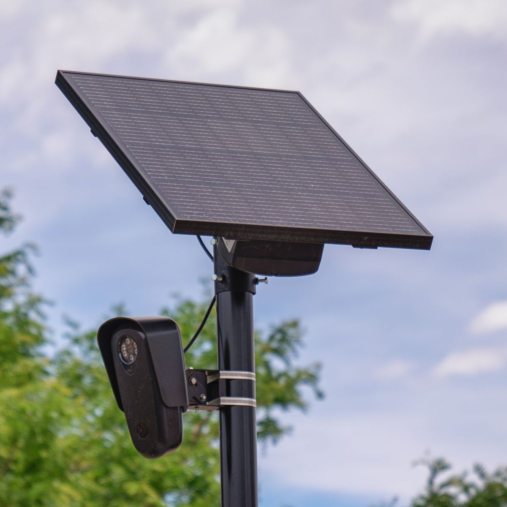
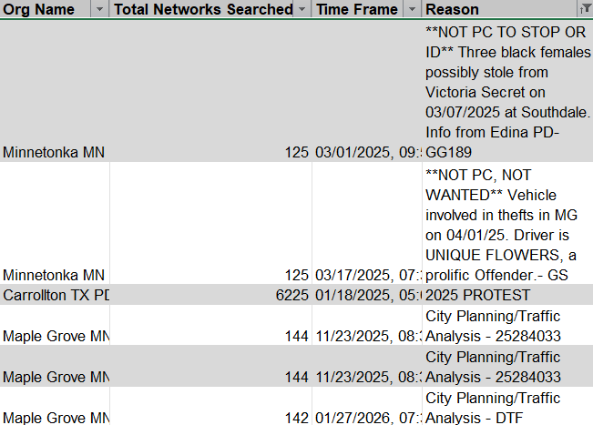

Eyes Off SLP
Stop Mass Surveillance in St. Louis Park
We are working to end the use of AI-powered Automated License Plate Readers (ALPRs) in St. Louis Park, Minnesota and protect our community's privacy.

We are working to end the use of AI-powered Automated License Plate Readers (ALPRs) in St. Louis Park, Minnesota and protect our community's privacy.

Automated License Plate Readers (ALPRs) are camera systems that automatically scan and record license plate numbers and vehicle information as cars pass by. These systems can capture thousands of plate images per minute and feed the data into searchable databases. Law enforcement agencies argue that ALPRs help locate stolen vehicles and identify suspects in criminal investigations. However, the technology captures data on every vehicle—not just those involved in crimes—meaning millions of law-abiding citizens are routinely photographed and tracked without their knowledge or consent.
By allowing these ALPR cameras to operate, St. Louis Park lets Flock Safety:
St. Louis Park's Flock Safety license plate readers were queried by outside agencies 2,511 times for immigration enforcement between January 2025 and April 2026. Homeland Security Investigations logged 1,330 distinct lookups, while an additional 826 searches targeted ICE picks-ups, warrants, and active field operations. At the extreme end of out-of-state use, a single agency in Michigan executed deportation warrant tracking over three consecutive months, showing how a local road network in Minnesota became embedded in a nationwide immigration dragnet.
To be clear: St. Louis Park Police themselves did not record any searches that listed immigration as the reason for the search. However, we have shared it with dozens of agencies with opposing values, who may use our data to target our residents and visitors in a way we would never allow our own department to do. So why did we let others?


In a Texas abortion investigation reported by 404 Media, police used Flock's nationwide ALPR network to search far beyond one jurisdiction. At the time, St. Louis Park was part of that sharing network, which meant local plate data could be swept into cases far beyond Minnesota.
404 Media's reporting makes clear why that matters: when police can query an interjurisdictional camera network for a deeply personal investigation, the privacy risks extend to every community connected to it. St. Louis Park residents should understand that their data can become part of searches tied to cases beyond their own community.
Read the 404 Media Article →The above are a small subset of queries we believe to be possible violations of Minnesota ALPR Law.
See the data report →
© 2026 Eyes Off SLP. All rights reserved.